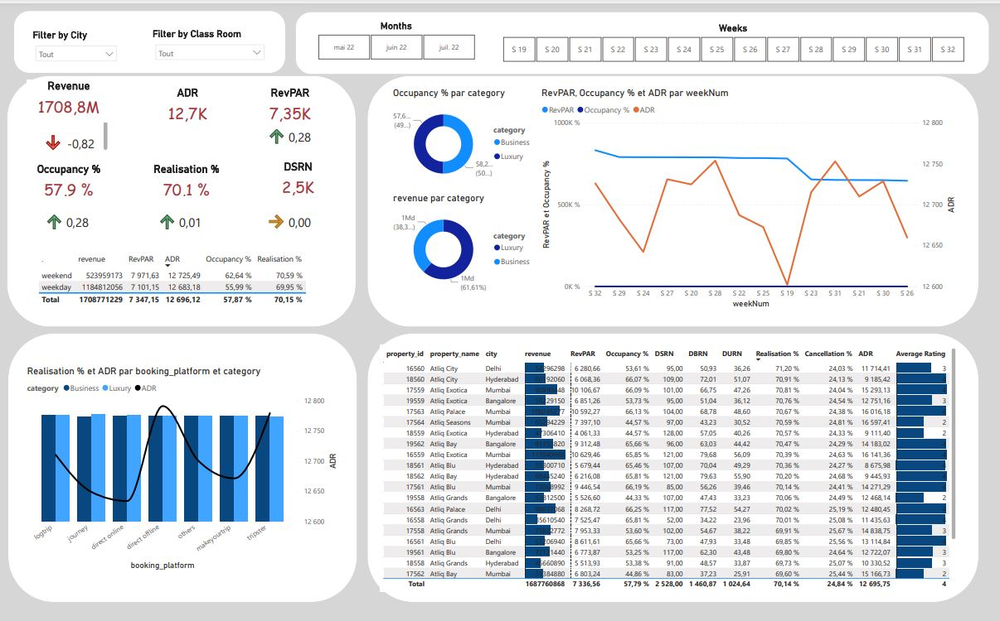
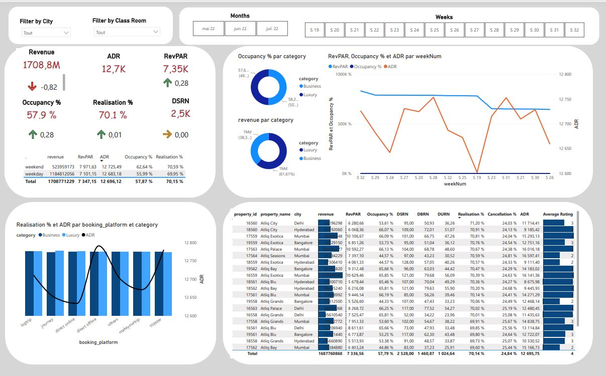
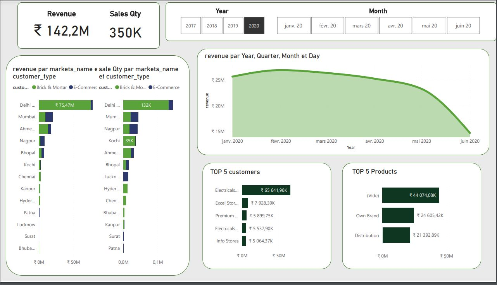
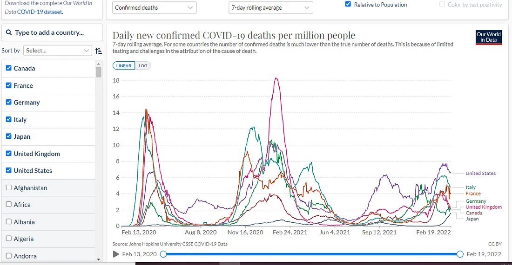
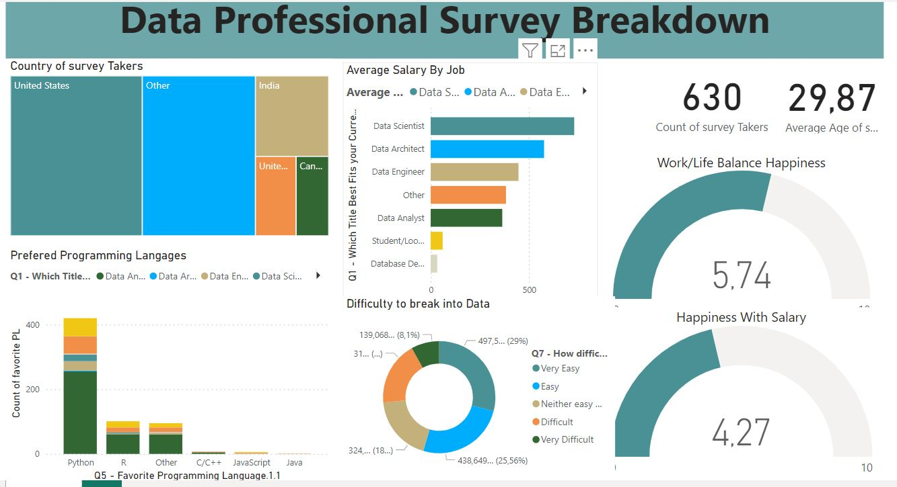
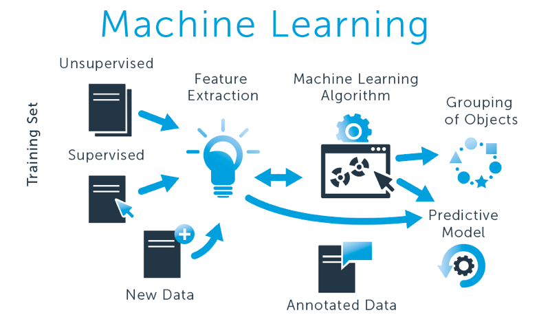
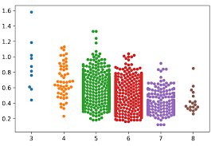
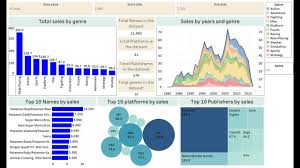

KAKPEU Hermann Désiré
compétent dans la collecte, le nettoyage et la préparation de données,
l'analyse exploratoire des données (EDA), la modélisation statistique,
la présentation claire des résultats, et la collaboration avec d'autres professionnels
pour résoudre des problèmes et prendre des décisions basées sur les données.
 Liste des Projets...

Liste des Projets...

J'ai mené à bien ce projet complet en Power BI en exploitant des données provenant de l'industrie hôtelière.
Après avoir défini des métriques clés spécifiques au secteur, j'ai créé un tableau de bord interactif et dynamique.
Celui-ci intègre quatre niveaux d'analyse détaillés, permettant de répondre aux questions critiques pour le business, telles que
la performance des ventes, la satisfaction client, l'occupation des chambres, et l'efficacité opérationnelle.

Dans ce projet, j'ai réalisé une analyse exploratoire avancée des données de ventes d'un supermarché, issues de Kaggle.
Mon approche inclut une analyse univariée et bivariée pour identifier les tendances et comprendre
les distributions et corrélations entre les variables. J'ai également effectué un nettoyage minutieux
des données, en traitant les valeurs manquantes et aberrantes. Les conclusions détaillées de cette
analyse sont disponibles à la fin de mon notebook Jupyter. cliquez en dessous pour voir le projet.
J'ai appliqué des concepts avancés de SQL pour explorer et manipuler des
données à l'aide d'opérations CRUD. J'ai utilisé des techniques sophistiquées telles que
les sous-requêtes corrélées, les CTE (Common Table Expressions), les fenêtres analytiques,
les indexations avancées, ainsi que la gestion des transactions et le contrôle de la
concurrence. Ces compétences m'ont permis de réaliser des analyses de données complexes
et d'optimiser les performances des requêtes.

Un projets complet dans lequel j'ai utilisé les données de vente de Atlic Hardware pour généré un dashboard avec power BI après
avoir définit les objectifs, les parties prenantes et les critères de succès avec l'outils Aims Grid. J'ai également procédé à un nettoyage des donnée dans power query.

Utilisation de Microsoft SQL Server Management Studio (SSMS) pour réaliser une Analyse
Exploratoire des Données (EDA) sur les données COVID extraites du site de données mondiales sur les cas confirmés de covid. En explorant et en analysant
les données à l'aide de requêtes SQL, j'ai mis en évidence des tendances, des patterns
et des insights essentiels pour mieux comprendre l'impact de la pandémie..

Dans l'un de mes précédents projets, j'avais réalisé un Dashboard qui permet d'effectuer une analyse assez complète des ventes. Dans ce projet, j'utilise des requêtes SQL pour repondre aux questions auquelles repond
le dashboard, je vérifie Ainsi la fiabilité des mesures Power BI.

Un dashboard construit à partir de données collectées grâce à un questionnaire sur differents professionnels de la Data. Il affiche les differents postes occupés, diverses regions, le salaire moyen de chacun, les langages de programmation préférés, et l'équilibre entre le salaire et la joie de travailler dans ce secteur.

Nettoyage des données et construction d'un dashboard dans Excel sur des données de vente de vélo provenant de régions diverses.
Le dataset utilisé dans ce projet est un tableau excel contenant des informations sur des maisons dans la ville de NashVille aux USA. J'ai utilisé le service de gestion de serveur SQL de miscrosoft (SSMS) pour nettoyer ces données en standardisant les formats de date, transformant les adresses et en modifiant certaines valeurs mal renseignées

Plongez dans mon projet où j'ai exploité les ensembles de données de base de Scikit-Learn pour maîtriser des modèles de machine learning essentiels tels que la régression linéaire, les arbres de décision, le clustering avec K-Means et l'évaluation avec K-Fold Cross Validation. Une plongée rapide mais intense dans l'apprentissage automatique fondamental.

Cette étude de cas vise à acquérir une idée de l'application de l'Analyse Exploratoire des Données (EDA) dans un scénario d'entreprise réel.
Dans cette étude de cas, en plus d'appliquer les techniques connues en EDA, je développe également une compréhension de base de l'analyse des
risques dans le secteur bancaire et des services financiers pour comprendre comment les données sont utilisées pour minimiser le risque de perte
d'argent lors de l'octroi de prêts aux clients

J'utilise le modele de Huff dans lequel j'intègre variables pertinentes pour trouver la position optimale des Parcel
lockers dans le ville de CAsablanca,
Explication complete

J'ai développé un projet novateur pour faciliter la compréhension
et l'utilisation des capteurs MEMS, essentiels dans l'industrie textile.
J'ai étudié et documenté le capteur NirOne, fournissant un manuel
clair et pertinent pour son utilisation. En parallèle, J'ai réalisé un
projet de Machine Learning, de la collecte des données au déploiement des
modèles ,
pour classifier les textiles dans une application desktop (Textilus).

LA description est en cours de preparation
Mathieu Llorens, CEO AT Internet
« La data est hype, le geek est chic et le marketing ne sera qu’algorithme et
corrélations dans un futur proche. Super, mais c’est plus compliqué que ça. […] »